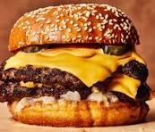

Burger

Description
Burger consists of fillings—usually a patty of pan fried, smoked or
grilled ground meat, typically beef—placed inside a sliced bun, sesame
seed bun, or bread roll.
Ingredients
- 3 pounds ground turkey
- 1/4 cup seasoned bread crumbs
- 1/4 cup finely dliced onion
- 2 egg whites
- 1/4 cup chopped fresh parsley
- 1 clove garlic, peeled and minced
- 1 teaspoon salt
- 1/4 teaspoon ground black pepper
Steps
- step-1: Gather all ingredients.
-
step-2: Mix ground turkey, seasoned bread crumbs, onion, egg whites,
parsley, garlic, salt, and pepper together in a large bowl.
- step-3: Form into 12 patties.
-
step-4: Cook the patties in a medium skillet over medium heat, turning
once, to an internal temperature of 180 degrees F (85 degrees C).
- step-5: Serve hot and enjoy!
Home